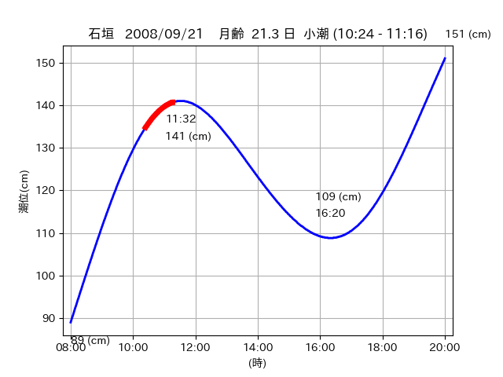
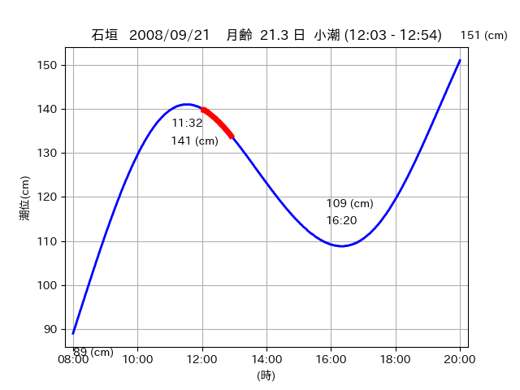
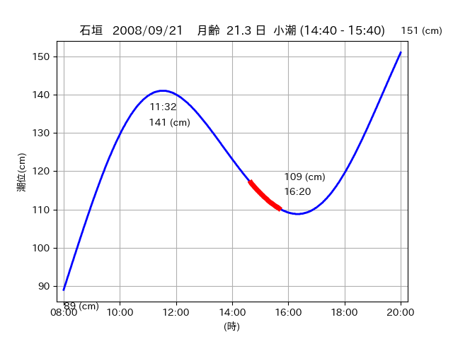

<!DOCTYPE html>
<html>
<head>
    
    <meta http-equiv="content-type" content="text/html; charset=UTF-8" />
    
        <script>
            L_NO_TOUCH = false;
            L_DISABLE_3D = false;
        </script>
    
    <style>html, body {width: 100%;height: 100%;margin: 0;padding: 0;}</style>
    <style>#map {position:absolute;top:0;bottom:0;right:0;left:0;}</style>
    <script src="https://cdn.jsdelivr.net/npm/leaflet@1.9.3/dist/leaflet.js"></script>
    <script src="https://code.jquery.com/jquery-3.7.1.min.js"></script>
    <script src="https://cdn.jsdelivr.net/npm/bootstrap@5.2.2/dist/js/bootstrap.bundle.min.js"></script>
    <script src="https://cdnjs.cloudflare.com/ajax/libs/Leaflet.awesome-markers/2.0.2/leaflet.awesome-markers.js"></script>
    <link rel="stylesheet" href="https://cdn.jsdelivr.net/npm/leaflet@1.9.3/dist/leaflet.css"/>
    <link rel="stylesheet" href="https://cdn.jsdelivr.net/npm/bootstrap@5.2.2/dist/css/bootstrap.min.css"/>
    <link rel="stylesheet" href="https://netdna.bootstrapcdn.com/bootstrap/3.0.0/css/bootstrap-glyphicons.css"/>
    <link rel="stylesheet" href="https://cdn.jsdelivr.net/npm/@fortawesome/fontawesome-free@6.2.0/css/all.min.css"/>
    <link rel="stylesheet" href="https://cdnjs.cloudflare.com/ajax/libs/Leaflet.awesome-markers/2.0.2/leaflet.awesome-markers.css"/>
    <link rel="stylesheet" href="https://cdn.jsdelivr.net/gh/python-visualization/folium/folium/templates/leaflet.awesome.rotate.min.css"/>
    
            <meta name="viewport" content="width=device-width,
                initial-scale=1.0, maximum-scale=1.0, user-scalable=no" />
            <style>
                #map_40c1ba8bf2c9e1ae7a69ed97d27de950 {
                    position: relative;
                    width: 2048.0px;
                    height: 1600.0px;
                    left: 0.0%;
                    top: 0.0%;
                }
                .leaflet-container { font-size: 1rem; }
            </style>
        
</head>
<body>
    
    
            <div class="folium-map" id="map_40c1ba8bf2c9e1ae7a69ed97d27de950" ></div>
        
</body>
<script>
    
    
            var map_40c1ba8bf2c9e1ae7a69ed97d27de950 = L.map(
                "map_40c1ba8bf2c9e1ae7a69ed97d27de950",
                {
                    center: [24.063, 123.737],
                    crs: L.CRS.EPSG3857,
                    ...{
  "zoom": 12,
  "zoomControl": true,
  "preferCanvas": false,
}

                }
            );

            

        
    
            var tile_layer_b43b555f457d0f93882bafc496978422 = L.tileLayer(
                "https://cyberjapandata.gsi.go.jp/xyz/seamlessphoto/{z}/{x}/{y}.jpg",
                {
  "minZoom": 0,
  "maxZoom": 18,
  "maxNativeZoom": 18,
  "noWrap": false,
  "attribution": "\u5730\u7406\u9662\u5730\u56f3",
  "subdomains": "abc",
  "detectRetina": false,
  "tms": false,
  "opacity": 1,
}

            );
        
    
            tile_layer_b43b555f457d0f93882bafc496978422.addTo(map_40c1ba8bf2c9e1ae7a69ed97d27de950);
        
    
            var marker_e0766fd4e832366cbb6dd02082907eca = L.marker(
                [24.0748, 123.7831],
                {
}
            ).addTo(map_40c1ba8bf2c9e1ae7a69ed97d27de950);
        
    
            var icon_232decc1b9eae751fd4bf58a3986c7c5 = L.AwesomeMarkers.icon(
                {
  "markerColor": "orange",
  "iconColor": "white",
  "icon": "info-sign",
  "prefix": "glyphicon",
  "extraClasses": "fa-rotate-0",
}
            );
        
    
        var popup_bbfff84898e8a8480047a24a6adc80e1 = L.popup({
  "maxWidth": "100%",
});

        
            
                var html_1d99c5820754841a2d9b5bb4e74b61aa = $(`<div id="html_1d99c5820754841a2d9b5bb4e74b61aa" style="width: 100.0%; height: 100.0%;"><table><tr><td></td></tr><tr><td><center>20080921 No.1 </center></table></td></tr></table</div>`)[0];
                popup_bbfff84898e8a8480047a24a6adc80e1.setContent(html_1d99c5820754841a2d9b5bb4e74b61aa);
            
        

        marker_e0766fd4e832366cbb6dd02082907eca.bindPopup(popup_bbfff84898e8a8480047a24a6adc80e1)
        ;

        
    
    
                marker_e0766fd4e832366cbb6dd02082907eca.setIcon(icon_232decc1b9eae751fd4bf58a3986c7c5);
            
    
            var poly_line_469aaaf7a9ecd2511534b7f77168e7fc = L.polyline(
                [[24.0748, 123.7831], [24.0747, 123.7784]],
                {"bubblingMouseEvents": true, "color": "#00FFFF", "dashArray": null, "dashOffset": null, "fill": false, "fillColor": "#00FFFF", "fillOpacity": 0.2, "fillRule": "evenodd", "lineCap": "round", "lineJoin": "round", "noClip": false, "opacity": 1.0, "smoothFactor": 1.0, "stroke": true, "weight": 3}
            ).addTo(map_40c1ba8bf2c9e1ae7a69ed97d27de950);
        
    
            var marker_072bdb03f7896b32e212ac0e7a207270 = L.marker(
                [24.0743, 123.7549],
                {
}
            ).addTo(map_40c1ba8bf2c9e1ae7a69ed97d27de950);
        
    
            var icon_3d18f0b0f8c256e63b2cc0c4efa1adf2 = L.AwesomeMarkers.icon(
                {
  "markerColor": "orange",
  "iconColor": "white",
  "icon": "info-sign",
  "prefix": "glyphicon",
  "extraClasses": "fa-rotate-0",
}
            );
        
    
        var popup_4053b1222fd6c43bfd346fc6122a236a = L.popup({
  "maxWidth": "100%",
});

        
            
                var html_dcf07cabeaf14db2cd21dff7b9ed79ed = $(`<div id="html_dcf07cabeaf14db2cd21dff7b9ed79ed" style="width: 100.0%; height: 100.0%;"><table><tr><td></td></tr><tr><td><center>20080921 No.2 </center></table></td></tr></table</div>`)[0];
                popup_4053b1222fd6c43bfd346fc6122a236a.setContent(html_dcf07cabeaf14db2cd21dff7b9ed79ed);
            
        

        marker_072bdb03f7896b32e212ac0e7a207270.bindPopup(popup_4053b1222fd6c43bfd346fc6122a236a)
        ;

        
    
    
                marker_072bdb03f7896b32e212ac0e7a207270.setIcon(icon_3d18f0b0f8c256e63b2cc0c4efa1adf2);
            
    
            var poly_line_864aaca9c4bb6b2e4987831b5bad9bfb = L.polyline(
                [[24.0743, 123.7549], [24.07, 123.7468]],
                {"bubblingMouseEvents": true, "color": "#00FFFF", "dashArray": null, "dashOffset": null, "fill": false, "fillColor": "#00FFFF", "fillOpacity": 0.2, "fillRule": "evenodd", "lineCap": "round", "lineJoin": "round", "noClip": false, "opacity": 1.0, "smoothFactor": 1.0, "stroke": true, "weight": 3}
            ).addTo(map_40c1ba8bf2c9e1ae7a69ed97d27de950);
        
    
            var marker_82fa2a237d6fe07f34697ccd96a1c489 = L.marker(
                [24.0676, 123.7393],
                {
}
            ).addTo(map_40c1ba8bf2c9e1ae7a69ed97d27de950);
        
    
            var icon_e81785f442a01cb2126519cbcd8ac9ae = L.AwesomeMarkers.icon(
                {
  "markerColor": "orange",
  "iconColor": "white",
  "icon": "info-sign",
  "prefix": "glyphicon",
  "extraClasses": "fa-rotate-0",
}
            );
        
    
        var popup_8cf51519d89a6ea9cd92d47979f562ab = L.popup({
  "maxWidth": "100%",
});

        
            
                var html_342cabb16b1fee4722baada236793bf4 = $(`<div id="html_342cabb16b1fee4722baada236793bf4" style="width: 100.0%; height: 100.0%;"><table><tr><td></td></tr><tr><td><center>20080921 No.3 </center></table></td></tr></table</div>`)[0];
                popup_8cf51519d89a6ea9cd92d47979f562ab.setContent(html_342cabb16b1fee4722baada236793bf4);
            
        

        marker_82fa2a237d6fe07f34697ccd96a1c489.bindPopup(popup_8cf51519d89a6ea9cd92d47979f562ab)
        ;

        
    
    
                marker_82fa2a237d6fe07f34697ccd96a1c489.setIcon(icon_e81785f442a01cb2126519cbcd8ac9ae);
            
    
            var poly_line_86203b5a3ffe43fb1b6830be60031364 = L.polyline(
                [[24.0676, 123.7393], [24.059, 123.7347]],
                {"bubblingMouseEvents": true, "color": "#00FFFF", "dashArray": null, "dashOffset": null, "fill": false, "fillColor": "#00FFFF", "fillOpacity": 0.2, "fillRule": "evenodd", "lineCap": "round", "lineJoin": "round", "noClip": false, "opacity": 1.0, "smoothFactor": 1.0, "stroke": true, "weight": 3}
            ).addTo(map_40c1ba8bf2c9e1ae7a69ed97d27de950);
        
</script>
</html>